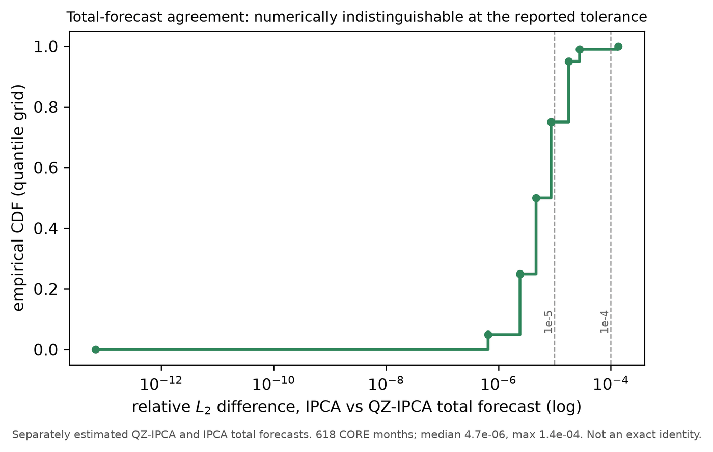
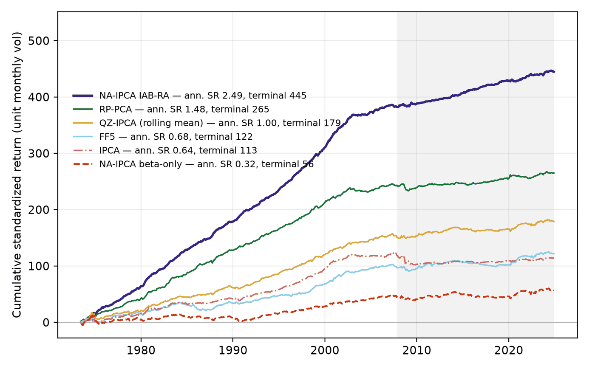

从预测到投资组合
已实测 · 项目 · 研究证据 · 2026 年 7 月 · 资料来源：NA-IPCA Methodology and Evidence Report（2026 年 7 月）与技术说明 A Note on the Unit-Gross Reporting Basis（2026 年 7 月 10 日） · 全部项目
我做了什么
- 滚动流程：每月用此前 120 个月、132 个特征的核心股票池数据重新拟合（每月中位数 1,990 只股票，1,335–3,150 只；共 1,244,002 个股票-月，来自 12,703 只股票；《特征几何》，第 17 页）；所有模型共用同一条均值-方差规则，直接确定个股权重。
- 在这一流程上搭建的基准模型族：Fama–French 五因子模型（FF5）、风险溢价主成分分析（RP-PCA）、工具化主成分分析（IPCA）、QZ-IPCA，以及使用和不使用截距规则的 NA-IPCA。
- 逐月诊断各模型的预测有多一致。
- 为便于比较，每个模型每月都按相同的多空头寸总规模报告，这也是系统化投资团队的常规做法（技术说明，2026 年 7 月 10 日）。
对投研团队的价值 两项可以直接沿用的检验。第一，两个模型的预测几乎相同，组合权重的典型相似度却只有 0.83（1 表示配置比例完全相同）；差别来自风险模型里一个为数值稳定而加的固定小常数（岭项）。把业绩归功于预测之前，先检查优化器。第二，优势并不稳定：截距规则的夏普比率全样本（618 个月）为 2.49，2007 年 10 月以来（206 个月）为 1.12。各组合均按相同的多空头寸总规模比较。
技能与工具 滚动样本外设计 均值-方差组合构建 潜在因子模型（IPCA、RP-PCA） 业绩、回撤与换手率核算 Python
阅读提示。 除非另有说明，收益均未计交易成本。这些是工作文稿，并非论文；正式结果见《特征几何》。五十年里夏普比率接近 2.5、最大回撤仅 −3.9%，这样的数字只用于在同一套流程内比较模型，并不代表可以实现的收益：《特征几何》指出，底层数据是否完全满足时点可得（point-in-time）的要求，尚未经过独立核实（第 39、45 页），特征库也是按今天的认识整理的。这里的结果都不能说明实盘表现、策略容量或市场冲击成本。
背景
几乎相同的预测可能给出不同的组合，而每个回测的账面规模（多空头寸总规模）又只是估计过程的偶然结果。这时该怎样比较模型？核心股票池（剔除微型股后的美国股票）用 132 个特征描述；每月用此前 120 个月的数据重新拟合模型，再用同一条均值-方差规则构建当月的多空组合：1973 年 6 月至 2024 年 11 月，共 618 个月。比较的核心是三个模型：工具化主成分分析（IPCA）是一种基于特征的标准因子模型，使用普通尺子（欧氏度量）；QZ-IPCA 改用特征尺子（格拉姆度量）；NA-IPCA 在此之上还估计一个设有上限的截距，即本模型中没有被任何因子解释的那部分预期收益。
图表 1：每个月的预测都几乎一致

（在新标签页打开大图）要点。 两组预测的相对差异中位数为百万分之 4.7，最大也不超过万分之 1.4。但在《特征几何》中，两个组合典型月份的权重相似度为 0.83（1 表示配置比例完全相同，0 表示毫无重合）。两组权重的差异来自组合规则在每个因子的风险上加的一个固定小常数（岭项，为数值稳定而加），这个常数按尺子的单位设定；去掉它，两组权重几乎完全重合。论文并未声称哪把尺子给出更好的风险模型。
图表 2：按单位头寸规模比较模型
| 模型 | 原始口径平均账面规模 | 夏普比率（原始／单位） | 最大回撤（原始／单位） | 换手率（原始／单位） |
|---|---|---|---|---|
| FF5 | 1.94 | 0.73／0.68 | −36.6%／−20.7% | 0.65／0.33 |
| RP-PCA | 0.53 | 1.53／1.48 | −6.8%／−13.4% | 0.18／0.34 |
| IPCA | 3.74 | 0.46／0.64 | −96.0%／−34.6% | 1.37／0.38 |
| QZ-IPCA | 2.32 | 0.95／1.00 | −25.5%／−16.6% | 0.82／0.35 |
| 含截距的 NA-IPCA | 509.18 | 2.41／2.47 | 无意义／−3.9% | 240.95／0.47 |
“原始”口径为未经缩放的组合权重（协方差矩阵的逆乘以预测）；“单位”口径则每月把同一组权重重新缩放，使多空头寸总规模（多头与空头之和）为 1。账面规模即多空头寸总规模。“无意义”对应英文原表中的 n.m.（not meaningful）。单位口径的月度换手率等于原始换手率除以当月账面规模，只是代理值，并非由实际持仓重建的交易。FF5 为 Fama–French 五因子模型；RP-PCA 为风险溢价主成分分析，另一种因子模型。资料来源：技术说明 A Note on the Unit-Gross Reporting Basis，表 1，第 3 页；波动率见证据报告表 2，第 3 页。
要点。 按单位头寸规模计，IPCA 的最大回撤是 −34.6% 而非 −96.0%，夏普比率是 0.64 而非 0.46。比较换手率之前，应先统一账面规模。但账面规模相同并不等于风险相同：按单位头寸规模计，年化波动率从 3.1%（NA-IPCA）到 6.1%（IPCA）不等，因此比较回撤应在波动率相同的前提下进行。表中 NA-IPCA 的夏普比率（2.47）没有针对截距估计不稳定作风险调整；加上这一调整，证据报告给出的数值为 2.49。
图表 3：同一口径下的模型家族

（在新标签页打开大图）要点。 在全样本上，完整截距规则使 NA-IPCA 与所有只用因子的组合拉开了距离（夏普比率 2.49，不用截距时为 0.32）；但 2000 年代后期以后，各条曲线的斜率都下降了：自 2007 年 10 月起（206 个月），两者分别为 1.12 和 0.16（表 4）。《特征几何》对这一时段检验的是平均收益：在核心股票池中，完整规则比不用截距时每月多出 0.20 个百分点，95% 区间为 [−0.07, 0.41]，p = 0.11（表 VI，第 33 页）。在论文自 1975 年 6 月起的 594 个月中，把样本依次分成三段、每段 198 个月，完整规则的夏普比率从 3.97 降到 3.03，再降到 1.13（第 63 页）。
延伸阅读
- 《特征几何》：为什么几乎相同的预测会给出不同的权重，同一次拟合内截距的价值，以及对特征尺子三个版本的配对推断（三个版本相对 IPCA 的夏普比率增益中，只有一项的区间不含零）。
- 《特征库》：对特征库的写法提出同样的问题。
- 相关项目：股票池、交易成本与回测检验（优势在哪里成立、成本有多高）· NA-IPCA 工具包（《特征几何》618 个滚动窗口所用的估计代码）。